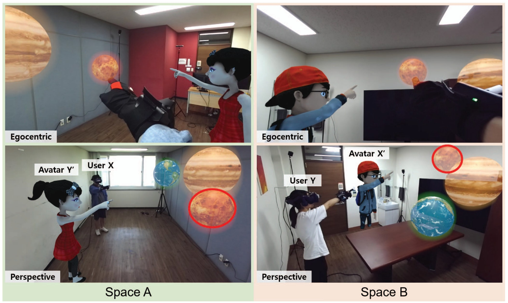
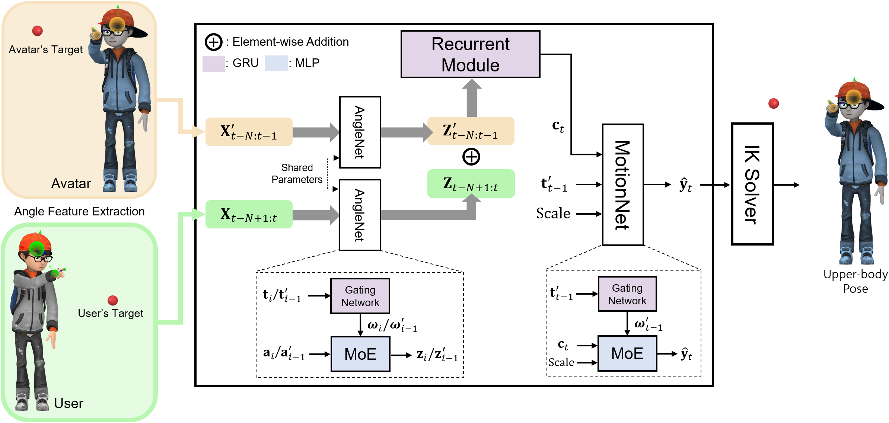
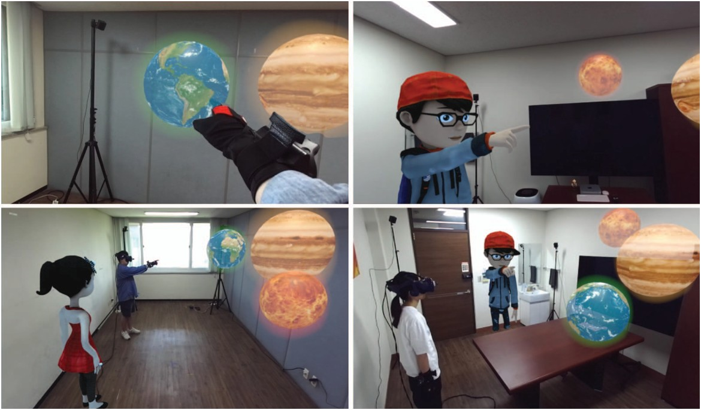
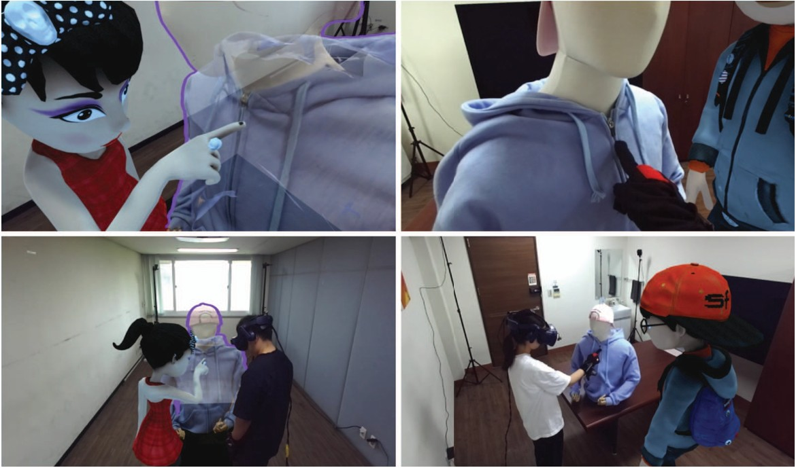

Real-time Retargeting of Deictic Motion to Virtual Avatars for Augmented Reality Telepresence
Abstract

Avatar-mediated augmented reality telepresence aims to enable distant users to collaborate remotely through avatars. When two spaces involved in telepresence are dissimilar, with different object sizes and arrangements, the avatar movement must be adjusted to convey the user's intention rather than directly following their motion, which poses a significant challenge. In this paper, we propose a novel neural network-based framework for real-time retargeting of users' deictic motions (pointing at and touching objects) to virtual avatars in dissimilar environments. Our framework translates the user's deictic motion, acquired from a sparse set of tracking signals, to the virtual avatar's deictic motion for a corresponding remote object in real-time. One of the main features of our framework is that a single trained network can generate natural deictic motions for various sizes of users. To this end, our network includes two sub-networks: AngleNet and MotionNet. AngleNet maps the angular state of the user's motion into a latent representation, which is subsequently converted by MotionNet into the avatar's pose, considering the user's scale. We validate the effectiveness of our method in terms of deictic intention preservation and movement naturalness through quantitative comparison with alternative approaches. Additionally, we demonstrate the utility of our approach through several AR telepresence scenarios.
Method Overview

Retargeting Results: Pointing
Deictic motions of test subjects with different heights (left) and the avatar motions retargeted in real time by our framework (right), shown in top (upper) and front (lower) views. The targets are placed at different locations for the user and the avatar.
Retargeting Results: Touching
Although the network is trained on motions of a single 170 cm subject, it retargets the touching motions of users with different heights to their avatars.
Robustness on Varying Target Positions
The avatar stably points at its own target while the target position is randomly adjusted.
Comparisons
AR Telepresence Scenarios


BibTeX
@inproceedings{kang2023real,
title={Real-time Retargeting of Deictic Motion to Virtual Avatars for Augmented Reality Telepresence},
author={Kang, Jiho and Yang, Dongseok and Kim, Taehei and Lee, Yewon and Lee, Sung-Hee},
booktitle={2023 IEEE International Symposium on Mixed and Augmented Reality (ISMAR)},
pages={885--893},
year={2023},
organization={IEEE},
doi={10.1109/ISMAR59233.2023.00104}
}